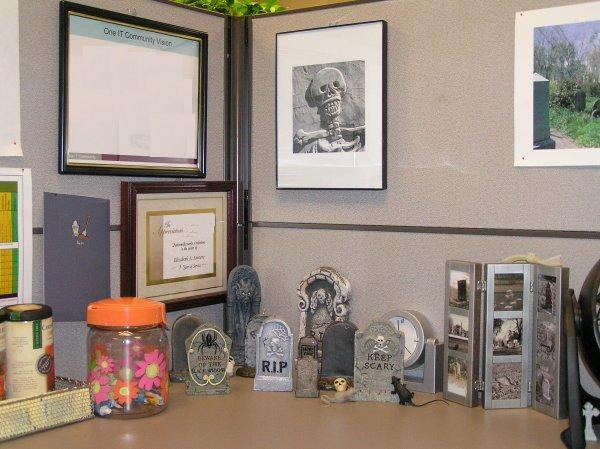
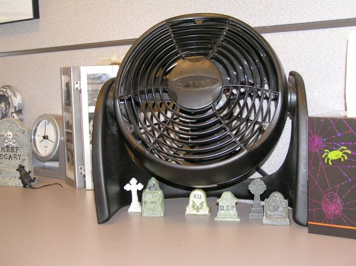

|
Allow me to introduce myself...My name is Beth, and I really am a grave addict (the official name for someone like me is "taphophile"). I absolutely love exploring old cemeteries and haunted/abandoned structures. I have a gigantic list of places I plan to explore; mainly places that family, friends, and coworkers have told me about. I am willing to travel anywhere in Ohio or neighboring states, so if you know of a haunted place I should check out, please e-mail me...I do reply to everyone who e-mails me, but be patient...it may take a couple of days, or sometimes even weeks (I get a bit overwhelmed with e-mail sometimes, and it takes time to get it all answered).
It seems like many people who e-mail me about the site also want to know more about the person who runs it. So here's a little bit about myself to answer some of the most common questions:
- Yes, I have a facebook profile...it is listed in the "Contact" section on the homepage. But here it is again: Facebook Fan Page.
- No, running the site is not my fulltime job. I work in an IT department at a large corporation in Columbus, Ohio. I spend my days there testing software. While it would be awesome to spend my days visiting cemeteries and ghost hunting, I haven't found a way to turn it into a career!
- Lots of people ask about my age. I'm 33 years old, and my astrological sign is Taurus (although I'm on the cusp of being a Gemini). I totally fit the personality traits of Taurus: here's a good site with astrology info.
- Another question I get a lot: "Are you obsessed with death?" Although cemeteries are obviously connected to death, that's not the main reason I visit them. I like walking through them to see all the different symbols, art, architecture...not to mention all the history! And sure, it is interesting to wonder about how the person died, etc. So I guess you could really say I'm just interested in gravestones. This is obvious from looking at my desk at work :)


- Many people also want to know how I got into cemeteries and ghosts. I've been interested in this stuff for as long as I can remember. I took lots of photos, but ran out of things to do with them. So I decided to start the website to share all of the photos I took (and still take) in January 2003. The website has been a great hobby - I've been able to meet people with similar interests from all over the world!
- Yes, I have always lived in Ohio - with the exception of three semesters I spent at Eastern Michigan University in Ypsilanti, Michigan. I grew up in Fairfield County - I went to Liberty Union-Thurston schools through the middle of my freshman year, then spent the rest of my time at William V. Fisher Catholic High School (class of 1997).
- The scariest thing I ever had happen on one of my adventures? Waverly Hills Sanatorium is definitely the creepiest place I've visited. It's the only place where I've actually seen something - a shadow figure.
- While cemetery exploring and ghost hunting are my biggest hobbies, they aren't the only things I'm interested in. One of my other big obsessions is collecting antiques. I love old photographs, postcards, glassware, prison items, and anything else I find cheap :) While I love all old photographs, my favorites are post mortem, institutional subjects (prisons, hospitals, etc), and mugshots. I also enjoy reading, gardening, and cooking.
- I'm a member of the Perry County Historical and Cultural Arts Society, the Ohio Historical Society, and the Association For Gravestone Studies (I'm on the Board of Trustees).
- Another common question I almost forgot to address - no, I've never been arrested/caught trespassing. While I have trespassed a few times, I usually try to get permission to visit places that are on private property.
I hope you all enjoy your visit to Grave Addiction. Again, please feel free to e-mail me with any questions, comments, or cemeteries that I should visit!
Where do you want to go? Select your destination:
|